01 · 수집
보안 공지 수집
GitHub Security Advisories API에서 지정 기간의 패키지 보안 취약점 공지를 수집합니다.
SK SHIELDUS ROOKIES MINI PROJECT · PYTHON TEAM 8
GitHub에 등록되는 패키지 보안 취약점 공지를 자동으로 수집하고, 운영 중인 서비스의 패키지 취약 여부를 판정하여 그 근거와 함께 대시보드로 제공하는 시스템입니다.
Python Team 8 · 김기현 · 노유성 · 엄동규 · 이시원 · 조성현
요약GitHub Security Advisories API에서 패키지 보안 취약점 공지를 수집하여 Notion에 저장하고, 서비스별 패키지 버전과 대조하여 취약도를 판정합니다. 결과는 Flask 웹 대시보드로 시각화하며, 작업 완료 및 오류 내역은 Slack으로 전송합니다.
01 · 수집
GitHub Security Advisories API에서 지정 기간의 패키지 보안 취약점 공지를 수집합니다.
02 · 저장 · 판정
Notion DB에 중복 없이 저장하고, 서비스별 패키지 버전과 대조하여 취약도 판정 및 통계 집계를 수행합니다.
03 · 시각화
Flask와 HTML 기반 대시보드에서 요약, 공지 통계, 분석 결과, 취약 근거를 확인할 수 있습니다.
04 · 반영 · 알림
판정 결과는 Notion에 반영하고, 작업 완료 및 오류 내역은 Slack으로 전송합니다.
| 구성 | 기술 |
|---|---|
| 서버 | Python 3.11+ · Flask 3.1+ |
| 화면 | Jinja2 · HTML · CSS · JavaScript (외부 차트 라이브러리 · CDN 미사용) |
| 공지 수집 | GitHub Security Advisories API (requests) |
| 데이터 저장 | Notion API (notion-client) |
| 버전 비교 | packaging · semver · univers |
| 알림 | Slack Incoming Webhook |
용어: GitHub의 공식 명칭은 Security Advisory(보안 권고)이며, 화면과 메뉴에서는 "보안 공지"로 표기합니다.
요약보안 공지는 매일 신규 등록되고 기존 공지도 지속적으로 갱신됩니다. 공지 확인 · 대조 · 근거 관리를 수작업으로 처리하는 부담을 줄이기 위해 전 과정을 하나의 흐름으로 자동화했습니다.
요약시스템은 웹 대시보드 · 서비스 계층 · 외부 연동의 3계층으로 구성됩니다. 대시보드에서 작업을 요청하면 서비스 계층이 처리하고, 데이터는 Notion에 저장되며 결과와 오류는 Slack으로 전송됩니다.
source/common) — GitHub 수집(github_advisory), Notion 클라이언트 및 요청 간격 · 재시도 정책(notion), Slack 알림(slack)을 모듈 단위로 관리합니다.source/web) — 화면 및 API 라우트, 조회 캐시, 수집 · 분석 작업의 진행 상태를 관리합니다. 장시간 작업은 백그라운드로 실행되어 화면 이동 시에도 중단되지 않습니다.요약시스템 구성의 각 모듈을 담당자별로 분담하여 개발했습니다. 공통 연동 모듈(GitHub · Notion · Slack)과 이를 활용하는 분석 · 시각화 기능으로 역할을 나누었습니다.
| 담당자 | 담당 기능 | 주요 구현 내용 | 관련 파일 |
|---|---|---|---|
| 이시원 | GitHub Advisories 연동 · 데이터 파싱 |
|
common/github_advisory/advisories.py services/advisory_sync.py |
| 노유성 | Notion 데이터 분석 처리 |
|
services/processor.py services/version_comparison.py |
| 김기현 | Notion 모듈 |
|
common/notion/notion.py common/notion/query_policy.py databases/schemas/ |
| 엄동규 | Slack 모듈 |
|
common/slack/slack.py common/slack/notifications.py |
| 조성현 | 시각화 |
|
web/ (app.py, templates, static) |
파일 경로는 source/ 기준입니다. 각 담당 기능이 처리 흐름의 어느 단계에 해당하는지는 다음 항목에 표시했습니다.
요약사용자 작업은 "신규 공지 가져오기"와 "분석 실행" 두 가지입니다. 전자는 수집 · 저장을, 후자는 판정 · 반영을 수행하며, 결과는 대시보드와 Slack에서 확인할 수 있습니다.
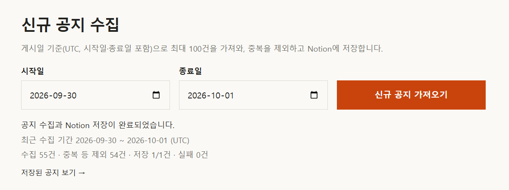
요약GitHub Advisories api 를 연동해 데이터를 조회하며, 중복 방지 및 데이터 수정 등의 데이터 필터링을 진행합니다.
...Z)과 Notion(...+00:00)의 날짜 형식을 통일한 후 비교합니다.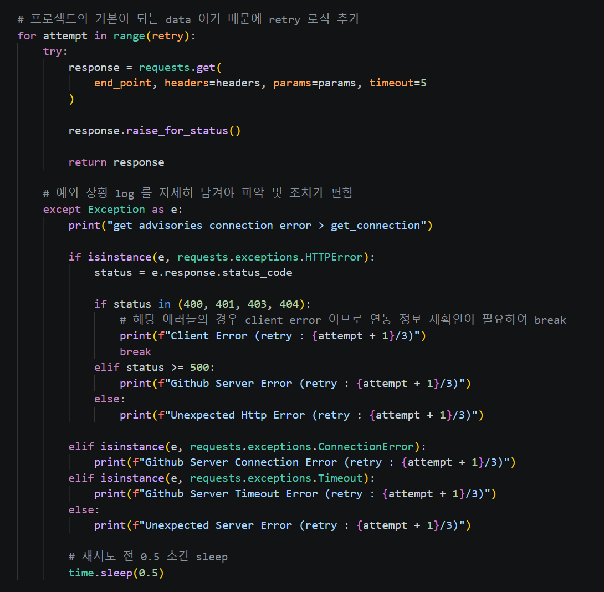
GitHub Advisories API 연동 시 예외 유형별로 로그를 세분화하여 오류 원인 추적의 편의성을 높였습니다.
| 예외 유형 | 로그 | 처리 |
|---|---|---|
| HTTP 400 · 401 · 403 · 404 | Client Error | 재시도하지 않고 즉시 중단 — 토큰 · 요청 조건 등 연동 정보 확인이 필요한 오류 |
| HTTP 5xx | Github Server Error | 재시도 |
| 그 외 HTTP 오류 | Unexpected Http Error | 재시도 |
| 연결 실패 | Github Server Connection Error | 재시도 |
| 응답 시간 초과 (5초) | Github Server Timeout Error | 재시도 |
| 기타 | Unexpected Server Error | 재시도 |
config.json의 max_retry, 기본 3회)로 관리합니다.time.sleep(0.5)를 두어 요청 간 지연 시간을 부여함으로써, 장애 중인 서버에 요청이 연속으로 집중되지 않도록 했습니다.updated_at 상이 — GitHub에서 공지 내용이 변경된 것으로 간주하고, 기존 행을 최신 내용으로 업데이트합니다.published_at 상이 — 게시일은 GitHub Advisories에서 변경되지 않는 값입니다. 따라서 값이 다르면 Notion에서 임의로 수정되어 데이터 무결성이 훼손된 것으로 판단하고, GitHub 원본 값으로 복원합니다.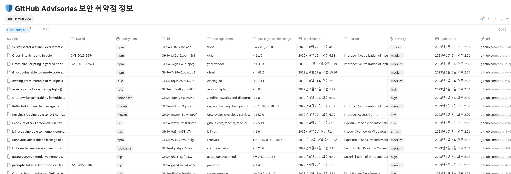
요약Notion은 수집 데이터와 분석 결과를 모두 저장하는 공통 저장소입니다. Notion API 호출을 NotionClient 하나로 모듈화하여 수집 · 분석 · 화면 조회 기능이 동일한 방식으로 데이터를 조회 · 생성 · 수정 · 삭제하도록 구성했습니다.
| 메서드 | 기능 | 사용처 |
|---|---|---|
| create_database() | 부모 페이지 하위에 DB(데이터 소스) 생성 | DB 초기 구성 |
| create_database_row() | 행(Notion 페이지) 생성 | 공지 신규 저장 |
| get_database_rows() | 날짜 조건 조회, 페이지네이션 자동 처리, 컬럼 값을 Python 값으로 변환 | 분석 · 화면 조회 |
| update_database_rows() | 지정 컬럼 수정 | 공지 갱신, 취약도 반영 |
| delete_database_row() | 행을 휴지통으로 이동(복구 가능) | 중복 공지 정리 |
page_id)를 함께 반환합니다.query_policy.py) — 앱 전체 Notion 요청의 시작 간격을 0.5초 이상으로 유지하고, 429 · 5xx · 타임아웃은 Retry-After를 준수하여 최대 3회 재시도합니다.@notify_errors를 적용하여 연결 · 조회 · 저장 실패 시 Slack 오류 알림이 전송됩니다.Notion DB는 보안 공지 · 서비스 · 서비스 패키지 3개로 구성되며, 컬럼 구조는 databases/schemas/에 정의되어 있습니다. 서비스 패키지는 서비스와 관계(relation)로 연결되고, 분석 결과는 서비스 패키지의 취약도(vulnerability) 컬럼에 저장됩니다.
| DB | 주요 컬럼 | 용도 |
|---|---|---|
| 보안 공지 (advisories) | id · title · url · published_at · updated_at · severity · cve_id · ecosystem · package_name · package_version_range · reason | GitHub 수집 공지 (1행 = 공지 1건, 첫 번째 패키지 기준) |
| 서비스 (service) | id · resource_name · business_domain · description · business_importance | 운영 서비스 목록 |
| 서비스 패키지 (service_package) | id · service_id(관계) · ecosystem · package_name · package_version · vulnerability | 서비스별 설치 패키지 및 분석 결과(safe · unknown · low ~ critical) |
Notion 선정 사유: 비개발자도 결과를 즉시 조회 · 편집할 수 있고, 단기 프로젝트에서 별도 저장소 구축 부담이 없습니다. 고유키 제약이 없는 한계는 코드상의 중복 확인 로직으로 보완했습니다.
매개변수에 기본값을 지정하여 Notion 기능을 연동했으며, 교육 과정에서 학습한 함수 매개변수 · 키워드 인자 활용 방식을 응용하여 구현했습니다. 하나의 메서드로 여러 조회 조건을 처리할 수 있어 호출부의 코드가 단순해집니다.
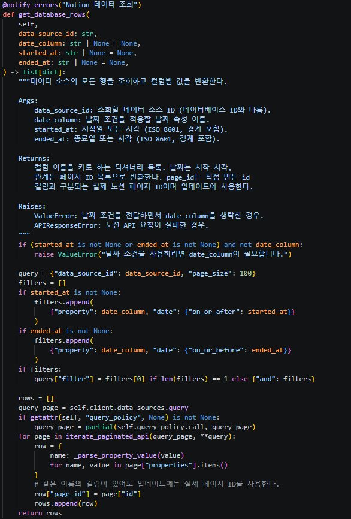
NotionClient(*, timeout_ms=60_000, query_policy=None)
get_database_rows(data_source_id, date_column=None, started_at=None, ended_at=None)
create_database(parent_page_id, title, properties, is_inline=False)get_database_rows(data_source_id)만 호출하면 전체 행을, 날짜 인자를 함께 전달하면 해당 기간의 행만 조회합니다. 날짜 조건을 전달하면서 date_column을 생략한 경우에는 ValueError로 잘못된 호출을 차단합니다.NotionClient()는 기본 타임아웃으로 동작하고, 웹 조회처럼 요청 간격 관리가 필요한 경우에만 query_policy를 전달합니다. 키워드 전용 인자(*)로 지정하여 인자 순서 혼동을 방지했습니다.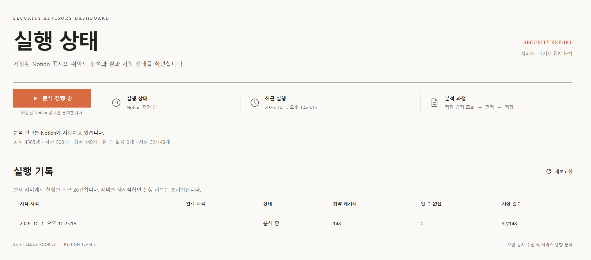
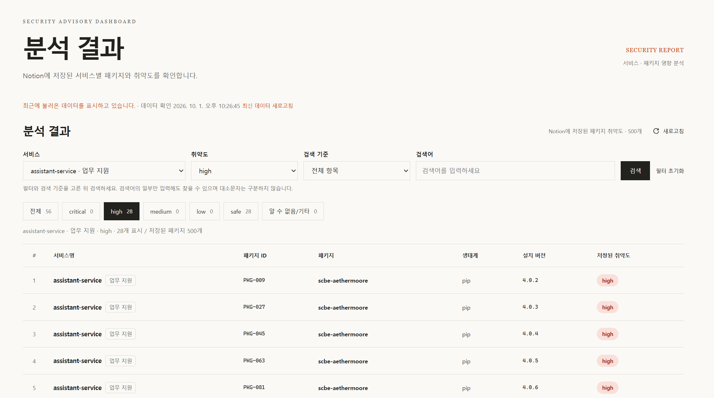
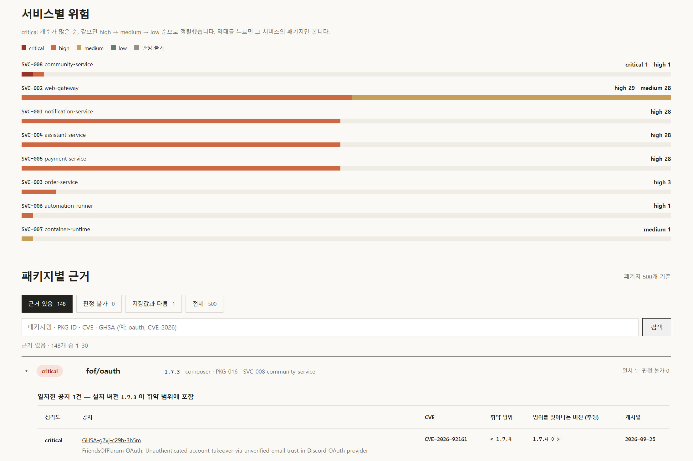
요약공지와 서비스 패키지를 패키지명 · 생태계 · 버전 기준으로 대조합니다. 버전 규칙은 생태계마다 상이하므로 pip, npm, Maven 등 13개 생태계별 비교 규칙을 적용하며, 비교할 수 없는 경우는 안전으로 간주하지 않고 "알 수 없음(unknown)"으로 분류합니다.
공지의 취약 범위가 >= 1.0, < 2.0이고 서비스가 동일 생태계 · 동일 패키지의 1.5 버전을 사용하는 경우, 쉼표로 연결된 조건을 모두 충족하므로 취약으로 판정하고 해당 공지의 심각도를 저장합니다. 2.1 버전은 범위를 벗어나므로 불일치로 처리됩니다.
| 생태계 | 비교 방식 |
|---|---|
| pip (PyPI) | packaging의 PEP 440 규칙 |
| npm · Go · Rust · Erlang · GitHub Actions · Swift | semver 규칙 (v 접두사 및 Go pseudo-version 지원) |
| NuGet · Maven · RubyGems | univers 전용 비교기 (Maven Final · GA · RELEASE 별칭 포함) |
| Composer | dev < alpha < beta < RC < stable < patch 순서 |
| Pub | 빌드 식별자까지 비교하는 Pub 고유 규칙 |
| other · 미등록 | 숫자 · 점 또는 SemVer 표기만 비교하며, 그 외는 판정 불가 |
지원 조건 기호: < <= > >= = == != ≤ ≥ ≠. ||, 와일드카드, ^, ~ 표기와 임의 태그 · 커밋 해시는 판정 불가로 분류합니다. PyPI/pip, Cargo/rust 등 생태계 별칭은 정규화 후 비교합니다.
| 상황 | 저장 값 |
|---|---|
| 복수 취약점 일치 | 최고 심각도 1건 (critical > high > medium > low) |
| 동일 패키지의 버전 비교 불가 | 확인된 취약점이 없는 경우 unknown (알 수 없음) |
| 확인된 취약점 + 판정 불가 공지 | 확인된 최고 심각도 유지 |
기존 unknown 패키지가 전체 분석에서 모두 비교 가능 · 불일치 | safe로 갱신하여 판정 불가 해소 |
| 그 외 불일치 · 관련 공지 없음 | 기존 취약 판정을 자동 해제하지 않음 |
dev · alpha · beta · stable 등 문자열 단계 간의 순서 규칙을 사용합니다.unknown(알 수 없음) 태그로 분류하여, 판정 누락이 결과에 드러나도록 처리했습니다.unknown 패키지는 safe로 자동 갱신됩니다.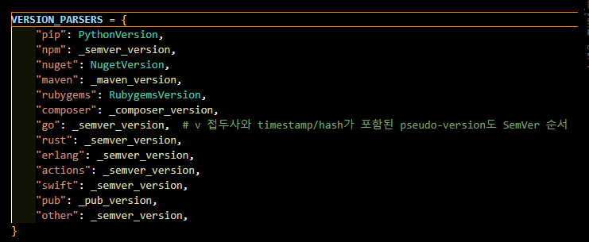
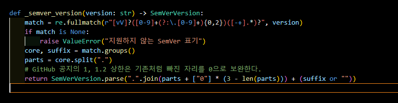
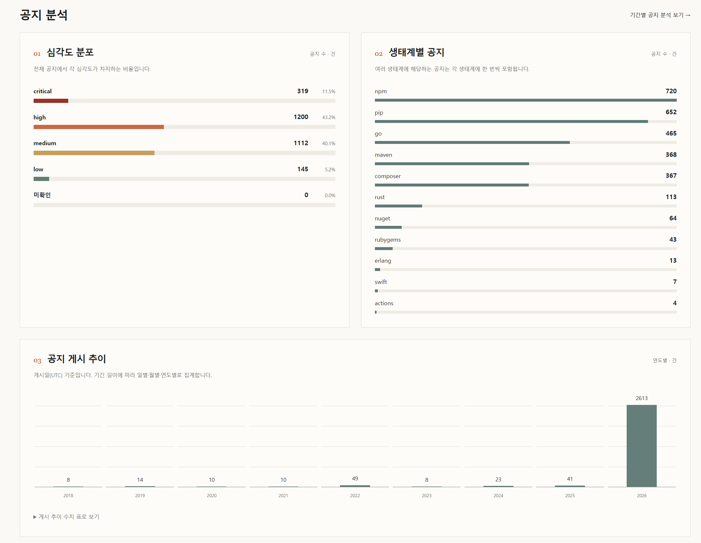
요약화면은 업무 흐름에 따라 요약 → 수집 → 통계 → 매핑 분석 → 결과 → 근거 순으로 구성되어 있습니다. 차트는 외부 라이브러리 없이 HTML과 CSS로 구현했습니다.
아래 순서는 시연 순서와 동일하며, 각 링크는 새 탭으로 열립니다.
시연 시 참고: 최초 조회 화면은 Notion 조회로 인해 지연될 수 있습니다. 시연 전 각 화면을 한 번씩 조회해 두면 60초간 캐시 데이터로 즉시 표시됩니다.
processor.py)와 동일한 비교 함수(version_matches_range)를 재사용하여, 분석 결과와 근거 화면의 판정 기준이 어긋나지 않도록 했습니다.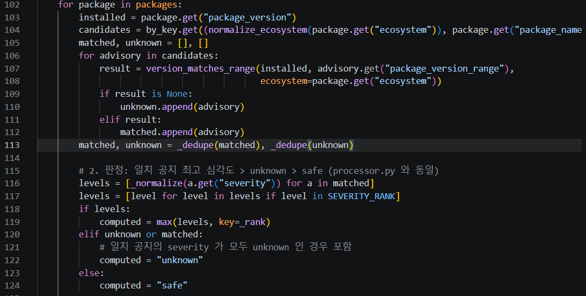
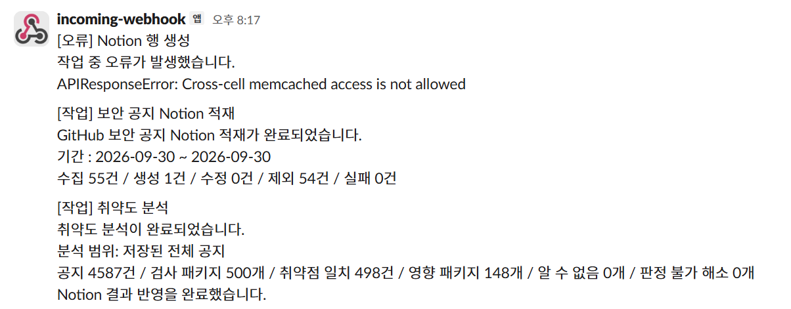
요약GitHub, Notion, Slack 등 외부 서비스에 의존하므로 장애 상황에서의 안정적인 처리를 중점적으로 고려했습니다. 일시적 오류는 재시도하고, 실패와 빈 결과를 구분하며, 동일 오류는 1회만 알림을 전송합니다.
| 대상 | 처리 방식 |
|---|---|
| GitHub 요청 | 서버 · 네트워크 오류는 최대 3회 재시도하며, 400 · 401 · 403 · 404는 연동 정보 확인이 필요하므로 즉시 중단합니다. 재시도 중에는 로그만 기록하고 최종 실패 시에만 알림을 전송합니다. |
| Notion 요청 | 요청 간격을 0.5초 이상으로 유지하고, 429 · 5xx · 타임아웃은 최대 3회 재시도합니다(Retry-After 준수). 일부 건 저장에 실패해도 나머지는 계속 처리합니다. |
| 화면 조회 | 60초 캐시를 적용하고, 갱신 실패 시 마지막 정상 데이터를 표시합니다. 빈 데이터와 조회 실패를 구분하며 샘플 데이터로 대체하지 않습니다. |
| 작업 실행 | 수집 · 분석은 백그라운드로 실행되며, 동일 작업의 중복 실행을 차단합니다(409). |
| 구분 | 전송 내용 |
|---|---|
| 공지 수집 · Notion 적재 완료 | [작업] 보안 공지 Notion 적재 — 기간, 수집 · 생성 · 수정 · 제외 · 실패 건수, 실패 사유(최대 5건) |
| 취약도 분석 완료 | [작업] 취약도 분석 — 분석 범위, 공지 · 검사 패키지 · 취약점 일치 · 영향 패키지 · 알 수 없음 · 판정 불가 해소 건수 |
| 작업 오류 | GitHub 최종 수집 실패, Notion 연결 · 조회 · 저장 실패, 설정 로딩 오류 |
| 웹 · 서버 오류 | 미처리 예외, HTTP 5xx, 백그라운드 작업 예외 |
< > &는 이스케이프하여 멘션으로 해석되지 않도록 합니다.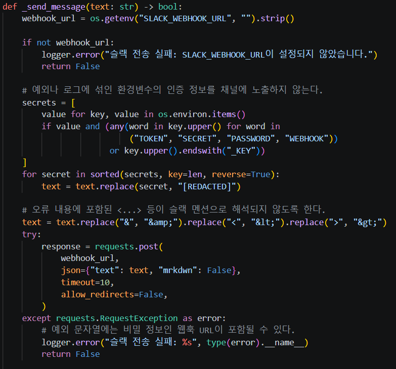
TOKEN · SECRET · PASSWORD · WEBHOOK이 포함되거나 _KEY로 끝나는 값을 비밀 값으로 수집합니다.[REDACTED]로 처리되도록 했습니다.Python 3.11 이상과 Git이 필요하며, 아래 명령은 프로젝트 루트에서 실행합니다.
git clone https://github.com/Shielders35-Python8/python-project.git
cd python-projectpython -m venv .venv
.\.venv\Scripts\Activate.ps1
python -m pip install -r requirements.txtmacOS / Linux는 python3 -m venv .venv 후 source .venv/bin/activate, Git Bash는 source .venv/Scripts/activate를 사용합니다.
Copy-Item .env.example .env # PowerShell
cp .env.example .env # macOS / Linux / Git Bash| 환경변수 | 용도 |
|---|---|
| GITHUB_TOKEN | GitHub API 인증 (요청 제한 완화) |
| NOTION_TOKEN | Notion 조회 · 저장 인증 |
| NOTION_ADVISORIES_DATA_SOURCE_ID | 보안 공지 데이터 소스 |
| NOTION_SERVICE_DATA_SOURCE_ID | 서비스 데이터 소스 (.env.example 미포함, 직접 추가) |
| NOTION_SERVICE_PACKAGE_DATA_SOURCE_ID | 서비스 패키지 · 취약도 데이터 소스 (직접 추가) |
| SLACK_WEBHOOK_URL | 작업 · 오류 알림용 Slack 웹훅 |
| NOTION_PARENT_PAGE_ID | Notion DB 생성 시 부모 페이지 |
Notion 조회에는 데이터베이스 ID가 아닌 데이터 소스 ID를 사용합니다. .env는 Git 관리 대상에서 제외됩니다.
python -m flask --app source.web.app run실행 후 http://127.0.0.1:5000에 접속합니다. 본 안내 화면은 /guide에서도 확인할 수 있습니다. 서버 기동만으로는 수집 · 분석이 실행되지 않습니다.
| 실행 방식 | 명령 |
|---|---|
| 코드 변경 시 자동 재시작 | python -m flask --app source.web.app run --debug |
| 포트 변경 | python -m flask --app source.web.app run --port 5001 |
| Python 모듈 직접 실행 | python -m source.web.app |
| 메서드 | 경로 | 내용 |
|---|---|---|
| GET | /api/health | 웹 서버 응답 확인 |
| GET | /api/advisories | 저장된 보안 공지 목록 |
| GET | /api/advisories/analysis | 공지 통계 (기간 조건: started_at, ended_at) |
| GET | /api/results | 패키지 취약도 (service, severity, search_field, q) |
| GET | /api/cache-status?view=dashboard | 데이터 준비 · 갱신 상태 |
| GET | /api/run-status | 분석 진행 상태 · 최근 실행 이력 |
| GET | /api/advisories/sync-status | 최근 수집 진행 상태 · 처리 건수 |
| POST | /api/run | 취약도 분석 실행 (202, 실행 중이면 409) |
| POST | /api/advisories/sync | 공지 수집 · 적재 실행 {"started_at":"2026-09-01","ended_at":"2026-09-30"} |
캐시를 사용하는 JSON API는 데이터 준비 중 202, 잘못된 기간은 400, Notion 조회 실패는 503을 반환합니다. POST API는 화면의 실행 버튼으로 호출됩니다.
python-project/
├── main.py # 메인 스크립트 (오류 알림 연계)
├── requirements.txt # Python 의존성
├── .env.example # 환경변수 예시
├── source/
│ ├── common/
│ │ ├── github_advisory/ # GitHub 보안 공지 수집
│ │ ├── notion/ # Notion 클라이언트 · 요청 간격 · 재시도 정책
│ │ └── slack/ # 작업 · 오류 알림
│ ├── config/ # 공개 설정 · 환경변수 로딩
│ ├── databases/schemas/ # Notion 데이터 구조
│ ├── example/ # 예시 데이터 · 서비스 패키지 시드 도구
│ ├── services/
│ │ ├── advisory_sync.py # 공지 중복 확인 · Notion 적재 · 적재 결과 알림
│ │ ├── advisory_analysis.py # 공지 통계 집계
│ │ ├── processor.py # 공지 · 패키지 대조 · 취약도 판정 · 저장
│ │ └── version_comparison.py # 생태계별 버전 비교 규칙
│ └── web/
│ ├── app.py # Flask 앱 · 화면 및 API 라우트
│ ├── data_cache.py # 조회 캐시 · 백그라운드 갱신
│ ├── analysis_runs.py # 분석 실행 상태 · 이력
│ ├── advisory_sync_runs.py # 공지 수집 실행 상태
│ ├── advisory_list.py # 공지 목록 구성
│ ├── dashboard_data.py # 분석 결과 구성 · 필터 · 검색
│ ├── evidence.py # 취약 근거 조회 · 비교
│ ├── templates/ # Jinja2 화면 템플릿 (guide.html = 본 문서)
│ └── static/ # CSS · 브라우저용 JavaScript
└── tests/ # 외부 연동 모의 처리 테스트python -B -m unittest discover -s tests -v외부 서비스를 모의 처리하므로 실제 Slack 메시지나 Notion 데이터는 생성되지 않습니다.
git switch -c feature/my-work # 1. 개인 브랜치 생성 (최초 1회)
git add . && git commit -m "작업 내용" # 2. 커밋
git push -u origin feature/my-work
git switch main && git pull origin main # 3. 최신 main 반영
git switch feature/my-work && git merge main
git switch main && git merge feature/my-work && git push origin main # 4. main 병합충돌 발생 시 공동 작업자의 코드를 임의로 삭제하지 않고 담당자와 확인합니다.